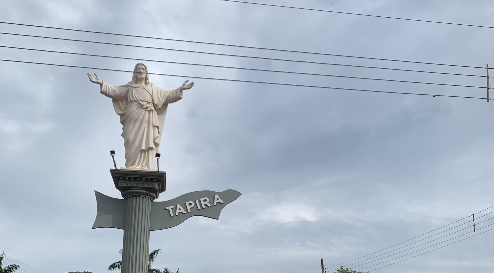

Do campo à cidade, um fluxo de oportunidades e estendem, um caminho se traça. Se revelando em cada etapa da jornada.
A terra fértil é o berço da agricultura, onde as sementes são semeadas e as colheitas celebradas. É lá que a conexão com a natureza é profunda e molda seus valores.
Contuo, é na cidade que muitas dessas colheitas encontram seu detino. Onde os produtos são valorizado e transformados em alimentos para milhoẽs de pessoas, oferecendo um mercado vasto e diversificado.